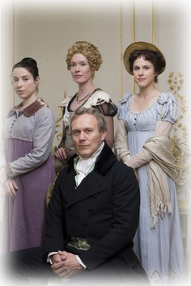
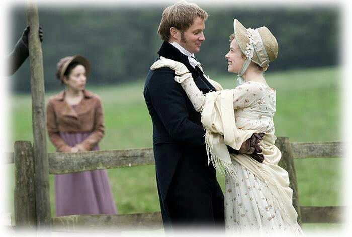

Persuasion is a 2007 BBC adaptation of Jane Austen's novel Persuasion. It was directed by Adrian Shergold and the screenplay was written by Simon Burke. Sally Hawkins stars as the protagonist Anne Elliot, while Rupert Penry-Jones plays Frederick Wentworth.
Before the events depicted in the film, Anne Elliott (Sally Hawkins) fell deeply in love with handsome young naval officer Frederick Wentworth (Rupert Penry-Jones) at the age of nineteen. But with neither fortune nor rank to recommend him, Anne's godmother, Lady Russell (Alice Krige), and family were against the match and persuaded her to break off the engagement.

Eight years later, Anne's family is in financial difficulty and has been forced to rent their home, Kellynch Hall.
Their tenants, Admiral Croft (Peter Wight) and Mrs Croft (Marion Bailey), are brother-in-law and sister to Captain Wentworth.
(IMDB)